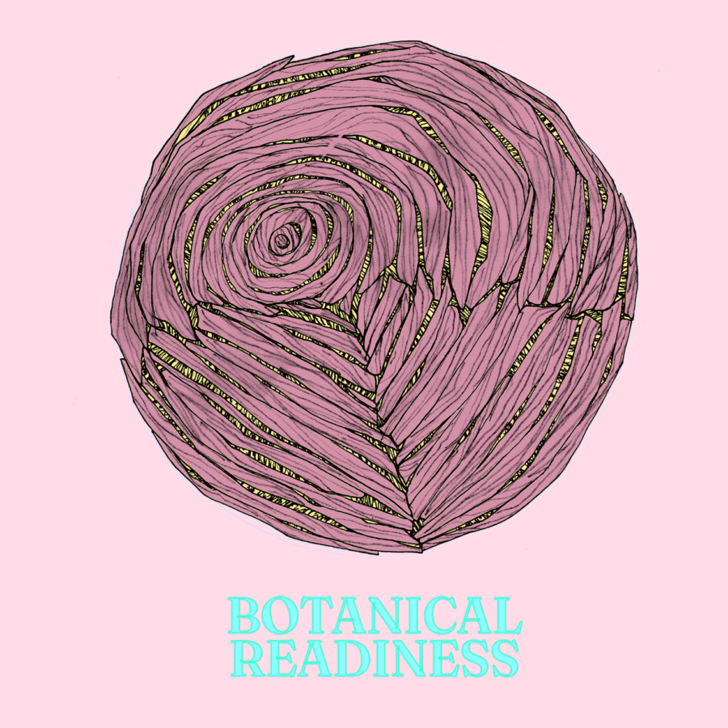

Botanical Readiness
This is a physical manifestation of Botanical Readiness, a bi-annual online periodical established in 2024.
A starting point: film trailer for Garden of Death (1974) https://tinyurl.com/32we6day
Artists:
Tom Burtonwood, Heather Charley, Sean Desantis, Jen Donahue, Cat Gilbert, Terence Hannum, Holly Holmes, Andrea Jablonski, Whitney Johnson-Lessard, Rob Karlic, Vesna Jovanovic, Erin LaRocque, Alison Mastny, Elaine Miller, Bruce Neal, Exeter Echo Norman, Catie Olson, Susannah Papish, Kyle Gregory Price, Chris Puente, Nancy Lu Rosenheim, Christina Sadovnikov, Andy Slater, will soderberg, Mary Tabar, Keith Teleki, Connie Toebe, Russell Weiss
Organized by EC Brown